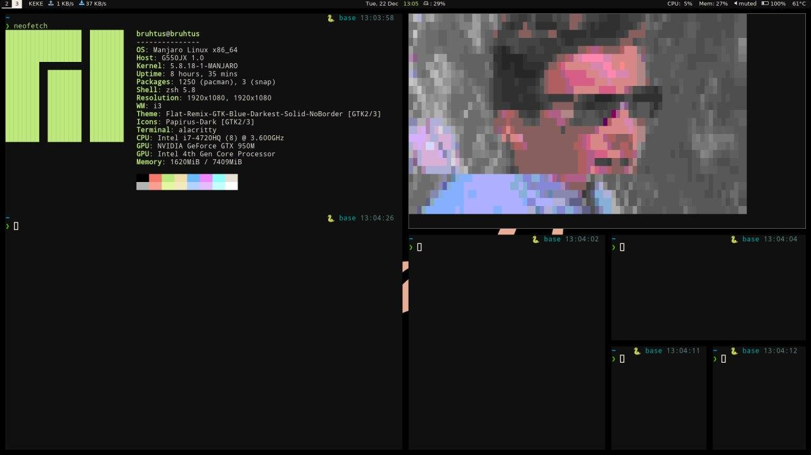

A minimalist approach to new arch linux user or new linux user in general. No more, maybe less.
Skip-able Part
Just a background story why i use manjaro i3 edition.
Have you ever bored with your current desktop environment? because that’s what made me wanted to try manjaro i3 edition. Why manjaro i3 edition and not something else like regolith linux? Here’s the reason:
- I want a rolling release distro because it’s kind of a pain to reinstall the whole system just to upgrade to the new version in fixed-point release distro just like regolith linux (because it’s based on ubuntu).
- I want to try new things and fixed-point release is kind of boring for me. There’s nothing wrong with fixed-point release distro, it’s just not for me.
Now you wondering why manjaro specifically, Ok let me explain. I choose manjaro because a lot of people said that manjaro is more stable than other arch-based linux because the manjaro team hold on the update for a week or two after the update on arch repo. And now arch linux user gonna get mad at me like “Arch linux is also stable if you choose the stable mirror bla bla bla”, and honestly it’s kind of true. The reason i didn’t using arch linux is more for long term stuff. What i mean long term is that when i need to reinstall the operating system on my machine or when i got a new device, i want to install the operating system quickly. Especially with new device which have different hardware and configuration and i need to figure it out one by one if i use arch linux, uh that’s kind of hard for me at the moment. I might try installing arch linux in the future because i like the philosophy of arch linux that is “choose only what you want” so you need to know what you want first and you decide what you want. That’s like the most “freedom” i’ve ever seen and i’m kind of excited to try it out, but for now i’m still trying to figure out what i want to install on my machine and manjaro i3 edition is here to help me do that.
My Experience
In this part i’m gonna type it into two part, the good part and the not good part of manjaro i3 edition.
The Good Part
What makes manjaro i3 edition special is that this installation come with only minimum stuff which is good because it doesn’t take up too much space in the fresh installation.
What do you mean by minimum stuff? well, for example in the full fledged desktop environment such as gnome, kde plasma, and xfce, you got system settings with the function to set up wallpaper, lock screen and stuff that you don’t even know. In manjaro i3 edition or in standalone window manager desktop environment, you didn’t have something like that. If you want something similar then you need to install the program that has the same function to set up wallpaper, lock screen, and other stuff.
That’s what i mean by minimal, it doesn’t come with a lot of stuff that you probably didn’t know that it’s installed on you system and take up space.
The Not Good Part
In case you’re happy that the fresh installation doesn’t take up a lot of space, you might want to hold that for a moment because it has the downside.
The downside with minimum stuff installed is that a lot of things doesn’t work from the start so you need to install a package or even tweak a bit on the terminal. For example, you need to install pulseaudio before you could use your headphone jack and you need to install pulseaudio-bluetooth if you want to use your bluetooth audio stuff. The installation doesn’t come with pulseaudio and it kind of hard to work with only alsa for me, so you need to keep that in mind.
But, it’s not really a bad thing (that’s why i called it “not good” instead of “bad”). Why it’s not a bad thing? because you learn how to fix stuff and slowly you understand what works and what doesn’t work rather than only using what’s already there. So there’s a learning process there, not as intense as arch linux but it’s the first step towards that.
You might complain “but it’s not specific to standalone window manager, we learn something too in full fledged desktop environment”, and yeah you might learn something in full fledged desktop environment but what you learn usually tied down to that specific desktop environment rather than the general stuff. I have no problem if i want to change distro from manjaro to arch linux or debian, but if you use a specific desktop environment that come with the linux distro then you might have a hard time because every linux distro has different configuration for their desktop environment. Yeah it’s gnome but the configuration and the key bindings doesn’t necessary the same with each linux distro, meanwhile when you’re using standalone window manager, you can backup you configuration file to github or other git repositories and use it in any linux distro you want (i’m not sure if you can do that with full fledged desktop environment).
Conclusion
Manjaro i3 edition is a nice warm up for someone who are trying to learn about standalone window manager desktop environment. Learn what package and configuration you want and learn how to fix the problem that doesn’t come with the installation package first, and then finally try arch linux.
In case you want something more minimal than manjaro i3 edition, you might want to try arcolinux , especially the arcolinuxd iso (it’s a combination of arch linux freedom with calamares installer).
December 2020 Setup
Rick Astley ASCII version anyone?
